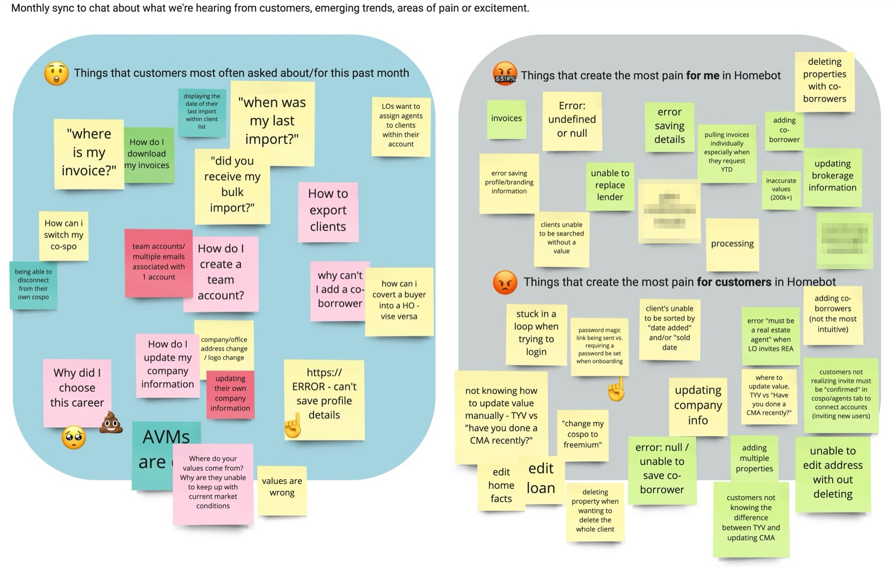
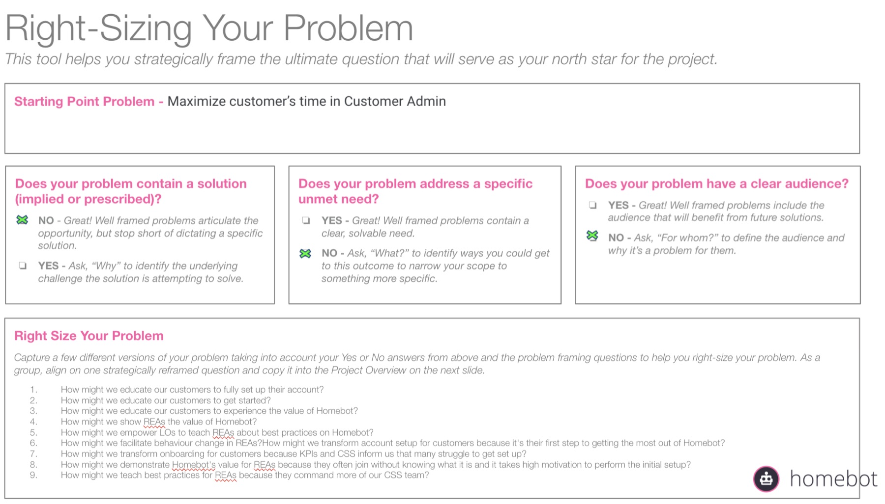
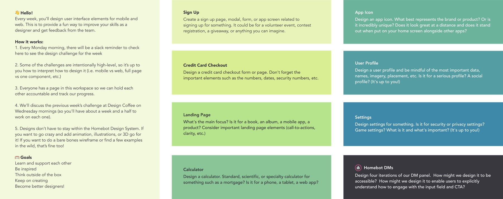

Homebot is a SaaS platform that helps real estate agents, lenders, and insurance agents stay in touch with homeowners long after a sale. Alongside my product work, I built a few structures to help the team learn and decide together.
Homebot · 2019–2022
Making the team better, not just the product.
At Homebot I built three things that outlasted any single feature: a mentorship program, a weekly research council, and kickoff frameworks that helped teams agree on the problem before designing a solution.
- My role
- Senior Product Designer
- Mentorship
- About 12 participants, run quarterly
- Research Council
- Weekly, mostly PMs and designers
- Frameworks
- Research kickoff template, "Right-Sizing Your Problem"

Context
Research Council
Research kept happening inside one project and then vanishing. So I started a weekly meeting where it couldn't.
I created and ran a weekly Research Council, attended mostly by product managers and designers. It gave teams a standing place to share what they were hearing from customers, talk through research in progress, and compare insights across problem areas, so one team's findings could inform another team's work.

Kickoff frameworks
The frameworks had one job: help teams agree on the problem before jumping into solutions.
I created a research kickoff template and an approach called "Right-Sizing Your Problem" to give discovery more structure. Both asked the same questions up front: what we were trying to learn, how big the problem actually was, and how much research it warranted. They were built for product managers and designers working together at the start of a project.
I still use the approach. An evolved version is the Design Kick-off Doc I publish for other designers.


Mentorship program
I started the Homebot Mentorship Program to give people across the company a light, structured way to learn from each other and work toward their professional goals.
I designed how it worked: matching mentors and mentees, setting goals, agreeing on expectations, and giving each pair enough guidance to make the relationship useful without turning it into bureaucracy. About 12 people took part, and it ran quarter after quarter.
I can't point to promotions or retention numbers, and I won't claim them. What I can say is that I took it from an idea to a program people kept signing up for.

The thread
I tend to step into ambiguous situations and create enough clarity and structure for people to move forward.
It's the same instinct behind my work at Pax8: making a complicated rewards program understandable for partners, and helping turn a pile of AI prototypes into one shared direction. I'm not the person who always has the answer. I'm the person who makes the problem clear enough for a team to find one.